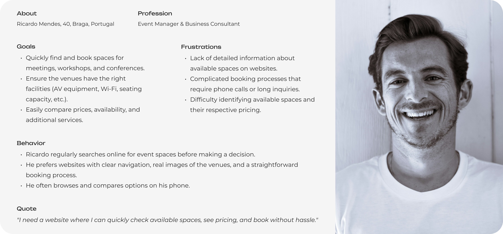
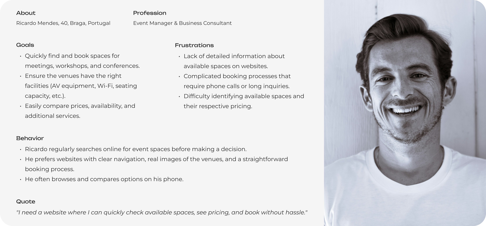

Currently I’m an UX/UI Designer @ lluni but I’m also a dog
mom 🐶.
Recently, I got a Kobo and now I love reading 📖, I also
love building with Lego 🧱 and I’m a crafter 🛠 (I designed
and builded my own dining table).

PROJECTS


Filipa's Town
Website
Work Type:
- Website Design
- UX/UI Design
- Web Development
Stack:


Where it all began
I wanted my portfolio to be more than just a collection of
projects. It needed to feel like me.
The idea behind Filipa’s Town was to build an
unique, interactive digital space that would represent my
creativity, organization and attention to detail while
also reflecting my playful side.
Instead of a conventional portfolio, I envisioned a town-like environment where each element would lead to different sections about me and my work.

The mission
The goal was to create a portfolio that:
- Showcases my skills in UX/UI Design and Front-End Development.
- Stands out by offering an immersive and interactive experience.
- Balances creativity with usability, ensuring recruiters and visitors can easily navigate and access my work, CV and contact information.
The challenge was to merge a visual metaphor (a town as a background) with a functional, responsive website that worked seamlessly across devices.

From chaos to clarity
I explored different types of portfolios for inspiration, from minimalist grids to fully immersive experiences and identified the importance of finding the right balance: creative enough to stand out, but structured enough to remain usable.
I sketched possible navigation flows and mapped how the “houses” of the town could work as clickable entry points to sections like About Me, Projects and Curious. This process helped me simplify interactions while keeping the concept fun and engaging.

Mapping the journey
The navigation was built around an interactive background illustration that functions as an image map.
- The houses with blue rooftops became interactive hotspots.
- Each click opens a modal with information. For example, the About Me section, portfolio works, or fun facts.
- The flows were refined to ensure that even users unfamiliar with image maps could easily explore the town.
To enhance the experience, I added details such as buttons written by me and also a loading animation created in Adobe Illustrator and After Effects, making the entry into the “town” more dynamic while showing my passion about swimming.

Giving shape to the vision
The visual identity of Filipa’s Town was entirely custom:
- I illustrated the background in Adobe Illustrator, adapting it for both desktop (horizontal layout) and mobile (vertical layout).
- I built the site using HTML, CSS, Bootstrap and JavaScript, focusing on responsiveness and interactivity.
- A playful yet professional tone of voice was defined for content. For example, the Contact page includes a fun fact and an invitation to recruiters to download my CV or send me an email.
I developed an UI Kit to ensure visual consistency across pages, defining colors, typography and reusable components.

Where design meets development
Since I was both the designer and developer of the project, I worked iteratively: designing, prototyping and coding in parallel.
- I tested the responsiveness of the interactive background on different devices.
- I refined the modal system, ensuring it aligned with the clickable hotspots and adjusted automatically on window resize.
- Accessibility was considered with a widget that allows users to enable features on click and exit accessibility mode at any time.

From vision to reality
The final result is a playful, interactive portfolio website that reflects my personality and skills:
- An engaging immersive environment that stands out among traditional portfolios.
- Seamless navigation through interactive elements.
- Clear calls to action for recruiters, such as contacting me or downloading my CV.
Filipa’s Town demonstrates not only my technical ability to design and code a responsive site, but also my creativity in storytelling and building digital experiences with a personal touch.

The impact
Launching Filipa’s Town had an impact that went beyond creating a portfolio, it opened doors.
- The unique and playful approach made my portfolio stand out, helping me capture recruiters’ attention in a competitive market.
- It directly led to more interview opportunities and positive feedback about the originality of the concept and the clarity of navigation.
- By showcasing both my design and development skills, the project positioned me as a versatile professional, comfortable bridging creativity and technical execution.
- The project also gave me greater exposure among peers and industry professionals, boosting my confidence and reinforcing my personal brand.
In short, Filipa’s Town was not only a creative playground, it became a career catalyst that connected me with real opportunities and helped me grow as a designer.
Music to my ears
"Phenomenal portfolio, clear, concise and most of all, creative!"
“... parabéns pelo teu site, muito interessante :)”
“Parabéns, Filipa! Adorei o teu site :)”

Project Overview
This project focused on redesigning the My Vodafone app to improve the user experience and create a modern, intuitive interface. The redesign aimed to optimize navigation, simplify frequent tasks, and increase user satisfaction.
See the full presentation at
01. Why
The My Vodafone app faced significant usability and aesthetic challenges, making it difficult for users to access core functionalities.
-
Key Issues Identified:
- Outdated visual interface.
- Confusing and unintuitive user flows.
- Low engagement with key features.
-
Goals:
- Enhance navigation and accessibility.
- Simplify tasks like checking balances or paying bills.
- Create a consistent and modern interface.
02. Research
User Insights and Data
A combination of qualitative and quantitative research was conducted to identify user pain points:
- 57% struggled with navigation.
- 47% found the interface cluttered.
- 85% desired faster and simpler processes.
User Personas
Based on the research, representative personas were developed to guide design decisions. These personas highlighted key user goals, such as task efficiency and clear information.
03. Benchmarking
A comparative analysis of competitor apps (NOS, MEO) was conducted to identify successful patterns and gaps.
-
Findings:
- Competitor apps featured modern designs but faced usability issues in certain areas.
- The goal was to strike a balance between functionality and visual appeal.
04. Information Architecture and User Flow
The information architecture was redesigned, and an optimized user flow was defined:
- Simplified hierarchy to prioritize key tasks.
- Fewer steps for critical actions, like bill payments.

05. UI Kit and Wireframes
UI Kit
A new design system was developed to ensure visual consistency and usability:
- Color palette aligned with Vodafone branding.
- Reusable components (buttons, icons, etc.).
Wireframes
Low-fidelity wireframes were created to validate the new structure quickly. These evolved into high-fidelity versions, which served as the foundation for prototyping.

06. Prototype and Usability Testing
Prototype
A high-fidelity interactive prototype was created to simulate the final user experience.

Usability Testing
Tests with real users validated the new design:
- 90% of users completed tasks faster.
- Positive feedback on clarity and navigation.

TL;DR
Redesign of the Founders Founders (F2) website to improve usability, align with business goals, and enhance user experience. The process included usability analysis, business goal definition, user research, benchmarking, information architecture, wireframing, prototyping and usability testing. Currently in the wireframing phase.
Design Methodology
The design process followed a User-Centered Design (UCD) approach, combined with Design Thinking principles.
01. Understanding the Current State
To kick off the project, I conducted an in-depth evaluation of the existing website to identify critical issues:
- Usability Problems: Non-functioning buttons, confusing navigation, and outdated design elements.
- Outdated Information: Key sections lacked relevant and up-to-date content.
- Lack of Engagement: The website wasn’t effectively showcasing the company’s services, such as space rentals.
Goal:
The redesign sought to create an user-friendly, visually appealing website that effectively supports business goals and enhances user engagement.
02. Defining Business Goals
Together with the team, we defined the project’s key business objectives:
- Reinforce Founders Founders' market positioning as a leader in supporting entrepreneurs and startups.
- Increase conversions by driving engagement with available services, such as space rentals.
- Improve navigation to deliver a seamless experience for users.
03. User Personas
 

04. Competitive Analysis and Benchmarking
I conducted an in-depth analysis of competitors’ websites to identify industry standards and opportunities for differentiation. The benchmarking focused on:
- Navigation: How competitors organize information.
- Visual Design: Branding consistency and visual appeal.
- Call-to-Action (CTA) Placement: Techniques to drive user engagement.
Key Insight:
Competitors often had well-defined navigation structures but lacked personalized approaches to highlight unique services.
05. Information Architecture
To structure the website effectively, I used a card sorting activity with stakeholders and potential users. This exercise helped define an intuitive structure that prioritized business needs and user expectations.
Outcome:
A streamlined site map that organizes key information into clear, user-friendly categories.

06. Wireframes
With the architecture finalized, I moved to create wireframes that visualized the layout and functionality of key pages.
- Focused on ensuring consistency across the site.
- Prioritized key CTAs, such as workspace inquiries and service bookings.
At this stage, the wireframes are being iteratively refined based on feedback from stakeholders.
07. Current Status and Next Steps
The project is currently in the wireframe design phase. Once wireframes are finalized, the next steps include:
- Developing high-fidelity prototypes.
- Conducting usability tests with real users.
Challenges and Lessons Learned So Far
This project has reinforced the importance of:
- Deeply understanding the existing product before redesigning.
- Collaborating closely with stakeholders to align business and user needs.
- Using iterative processes to refine solutions based on feedback.
CURIOUS?
 Fun fact about me:
Fun fact about me:
When I’m not designing digital experiences, I’m a
professional architect... of Legos!
There's nothing like spending hours building (and
sometimes un-building creative disasters) with those
colorful pieces!
Want to know more?
Got questions? A fun idea? Or just curious?
-
Looking for someone to join your product team? ➔

-
Want to brainstorm an idea? ➔
-
Curious about my latest project or my favorite design
tool? ➔
Or...
 and check it all out at once!
and check it all out at once!